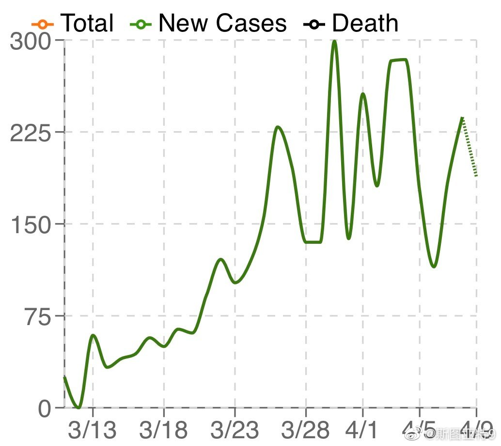
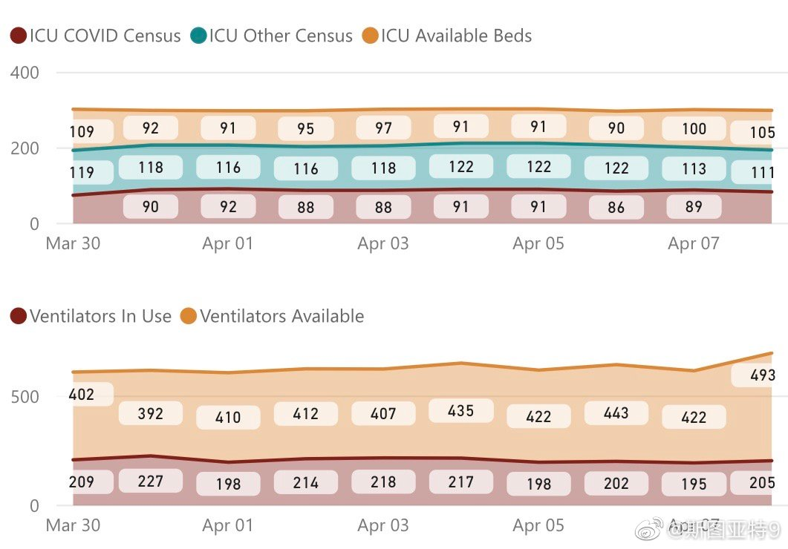

这几天其实在湾区的媒体上可以看出一些乐观的情绪的。这也是不无道理的：过去两周每日新增病例保持平稳（图1），ICU人数和呼吸机使用大约10天都没有增长（图2是Santa Clara县的数据）。后者比前者更重要，一是因为确诊数受多种因素影响，但ICU和呼吸机使用人数是不受这些因素影响的，所以是对疫情更准确的评估；二是因为医疗系统超负荷是最大的风险。如果你足够乐观的话，就可以让自己相信可能我们已经过了最艰苦的时刻。很多人已经在呼吁政府开始制定居家令退出战略，如  网页链接 。旧金山市已经成立了专门的小组准备追踪所有确诊者的接触者： 网页链接 网页链接 这在过去几周疲于奔命的美国是很少听说的词汇。我并不相信那些说居家令开始的早疫情反而会晚到底的模型。无论在哪里，只有有能力追踪到所有感染者和接触者，才可以解除居家令。而湾区已经在布局了。
网页链接 。旧金山市已经成立了专门的小组准备追踪所有确诊者的接触者： 网页链接 网页链接 这在过去几周疲于奔命的美国是很少听说的词汇。我并不相信那些说居家令开始的早疫情反而会晚到底的模型。无论在哪里，只有有能力追踪到所有感染者和接触者，才可以解除居家令。而湾区已经在布局了。
- 
- 